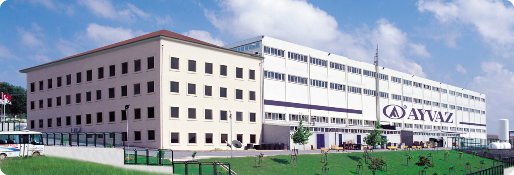

@@include('components/page-blocks/_breadcrumbs.html',{"second":" О компании","third":"","fourth":""})
Евроснаб — официальный дилер Ayvaz
С 2003 года являемся официальнфми дилерами компании Ayvaz в России.
Имеем собственный склад сильфонных компенсаторов в г. Екатеринбург.
Доставляем продукцию по всей России транспортными компаниями.
Оказываем услуги
- Разработка инженерных решений.
- Динамический и статистический расчёт трубопроводных систем на самокомпенсацию и прочностные характеристики.
- Расчёт, проектирование, поставка тканевых, сильфонных, сальниковых, линзовых, резинокордовых компенсаторов.
- Обоснование инвестиций с экономической и технической точки зрения.
- Сбор и подготовка исходной информации.
- Подготовка спецификаций, смет, ведомостей, плана установки компенсаторов.
- Тендерная документация, чтобы выбрать и заказать компенсатор.
- Авторский контроль за установкой компенсаторов.
- Консультации и техническая поддержка на время реализации проекта.
Оказываем услуги
Компания «Ayvaz» находится в г. Стамбул (Турция) и производит более 2000 наименований продукции, которая используется почти на всех промышленных производствах. 56% от общего оборота поступает от экспорта в 62 страны мира. Основную часть экспорта составляют продажи в Италию - 40% и Германию - 15%.
75 000 м²
общая площадь завода в Турции
более 600
сотрудников работает в компании Ayvaz

Гарантия качества
Ayvaz имеется собственную лабораторию, которая сертифицирована TÜV (европеский контроль качества). Поэтому каждый компенсатор проходит несколько испытаний, в зависимости от его вида:
- Рентгенографию
- Ультразвуковые испытания
- Гидроиспытания
- Пневновмоиспытания
- Проверка цикличности
Вся продукция Айваз подтверждается наличием сертификатов качества СЕ и ISO 9001:2000, полученных от TÜV, а также от ГОСТ-Р, LLOYDS, Bureau Veritas, VDS.


История компании Ayvaz
1960
Появлении компании Ayvaz и производство запорной арматуры из бронзы для судостроительства.
1970
Начали производить собственную санитарно-техническую и запорную арматуру и импортировать ее в другие страны.
1980
Ayvaz с производительной силой 16 человек основывает торговую точку в районе Першембе Пазары, затем в 1984 году переезжает на собственное предприятие в Авжылар.
2001
Для снабжения внутреннего и внешнего спроса компания переезжает в новый производственный цех на 75 000 м² с закрытой площадью 32 000 м²
2003
Евроснаб становится офиицальным дилером Ayvaz в России.
сейчас
В компании Ayvaz работает более 600 человек. Из них 40% офисные работники, где 52 инженера. Остальные трудятся в отделах производства, планирования, исследовательско-научном центре, в отделах контроля качества, маркетинга
и продаж.